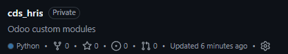
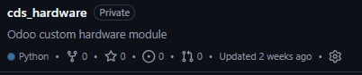
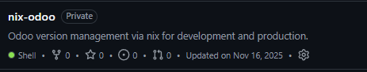

Odoo Projects
A private workspace for developing and testing custom Odoo modules. This repository contains implementation experiments, internal tools, and technical notes focused on learning, optimization, and real-world business use cases.
HRIS [WIP]

- Contains all modules for hris related transactions.
- Hris
- Attendance
- Payroll
Hardware Modules [WIP]

Contains all custom modules that enable the system to communicate with MCUs(microcontrollers).
- Core module
- ESP32 Module
Nix Odoo

- Contain a proof of concept design that combine bash and nix for managing odoo projects.